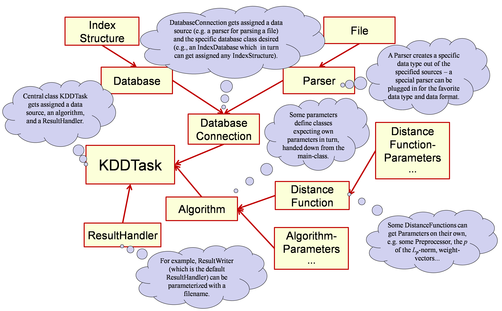

See: Description
| Package | Description |
|---|---|
| de.lmu.ifi.dbs.elki.algorithm |
Algorithms suitable as a task for the
KDDTask main routine. |
| de.lmu.ifi.dbs.elki.algorithm.benchmark |
Benchmarking pseudo algorithms.
|
| de.lmu.ifi.dbs.elki.algorithm.classification |
Classification algorithms.
|
| de.lmu.ifi.dbs.elki.algorithm.clustering |
Clustering algorithms.
|
| de.lmu.ifi.dbs.elki.algorithm.clustering.affinitypropagation |
Affinity Propagation (AP) clustering.
|
| de.lmu.ifi.dbs.elki.algorithm.clustering.biclustering |
Biclustering algorithms.
|
| de.lmu.ifi.dbs.elki.algorithm.clustering.correlation |
Correlation clustering algorithms
|
| de.lmu.ifi.dbs.elki.algorithm.clustering.correlation.cash |
Helper classes for the
CASH algorithm. |
| de.lmu.ifi.dbs.elki.algorithm.clustering.em |
Expectation-Maximization clustering algorithm.
|
| de.lmu.ifi.dbs.elki.algorithm.clustering.gdbscan |
Generalized DBSCAN.
|
| de.lmu.ifi.dbs.elki.algorithm.clustering.hierarchical |
Hierarchical agglomerative clustering (HAC).
|
| de.lmu.ifi.dbs.elki.algorithm.clustering.kmeans |
K-means clustering and variations.
|
| de.lmu.ifi.dbs.elki.algorithm.clustering.kmeans.initialization |
Initialization strategies for k-means.
|
| de.lmu.ifi.dbs.elki.algorithm.clustering.kmeans.parallel |
Parallelized implementations of k-means.
|
| de.lmu.ifi.dbs.elki.algorithm.clustering.kmeans.quality |
Quality measures for k-Means results.
|
| de.lmu.ifi.dbs.elki.algorithm.clustering.onedimensional |
Clustering algorithms for one-dimensional data.
|
| de.lmu.ifi.dbs.elki.algorithm.clustering.optics |
OPTICS family of clustering algorithms.
|
| de.lmu.ifi.dbs.elki.algorithm.clustering.subspace |
Axis-parallel subspace clustering algorithms
The clustering algorithms in this package are instances of both, projected clustering algorithms or
subspace clustering algorithms according to the classical but somewhat obsolete classification schema
of clustering algorithms for axis-parallel subspaces.
|
| de.lmu.ifi.dbs.elki.algorithm.clustering.subspace.clique |
Helper classes for the
CLIQUE algorithm. |
| de.lmu.ifi.dbs.elki.algorithm.clustering.trivial |
Trivial clustering algorithms: all in one, no clusters, label clusterings
These methods are mostly useful for providing a reference result in evaluation.
|
| de.lmu.ifi.dbs.elki.algorithm.itemsetmining |
Algorithms for frequent itemset mining such as APRIORI.
|
| de.lmu.ifi.dbs.elki.algorithm.outlier |
Outlier detection algorithms
|
| de.lmu.ifi.dbs.elki.algorithm.outlier.anglebased |
Angle-based outlier detection algorithms.
|
| de.lmu.ifi.dbs.elki.algorithm.outlier.clustering |
Clustering based outlier detection.
|
| de.lmu.ifi.dbs.elki.algorithm.outlier.distance |
Distance-based outlier detection algorithms, such as DBOutlier and kNN.
|
| de.lmu.ifi.dbs.elki.algorithm.outlier.distance.parallel |
Parallel implementations of distance-based outlier detectors.
|
| de.lmu.ifi.dbs.elki.algorithm.outlier.lof |
LOF family of outlier detection algorithms.
|
| de.lmu.ifi.dbs.elki.algorithm.outlier.lof.parallel |
Parallelized variants of LOF.
|
| de.lmu.ifi.dbs.elki.algorithm.outlier.meta |
Meta outlier detection algorithms: external scores, score rescaling.
|
| de.lmu.ifi.dbs.elki.algorithm.outlier.spatial |
Spatial outlier detection algorithms
|
| de.lmu.ifi.dbs.elki.algorithm.outlier.spatial.neighborhood |
Spatial outlier neighborhood classes
|
| de.lmu.ifi.dbs.elki.algorithm.outlier.spatial.neighborhood.weighted |
Weighted Neighborhood definitions.
|
| de.lmu.ifi.dbs.elki.algorithm.outlier.subspace |
Subspace outlier detection methods.
|
| de.lmu.ifi.dbs.elki.algorithm.outlier.svm |
Support-Vector-Machines for outlier detection.
|
| de.lmu.ifi.dbs.elki.algorithm.outlier.trivial |
Trivial outlier detection algorithms: no outliers, all outliers, label outliers.
|
| de.lmu.ifi.dbs.elki.algorithm.statistics |
Statistical analysis algorithms
The algorithms in this package perform statistical analysis of the data
(e.g. compute distributions, distance distributions etc.)
|
| Package | Description |
|---|---|
| de.lmu.ifi.dbs.elki.data |
Basic classes for different data types, database object types and label types.
|
| de.lmu.ifi.dbs.elki.data.model |
Cluster models classes for various algorithms.
|
| de.lmu.ifi.dbs.elki.data.projection |
Data projections.
|
| de.lmu.ifi.dbs.elki.data.spatial |
Spatial data types - interfaces and utilities.
|
| de.lmu.ifi.dbs.elki.data.synthetic |
Generators for synthetic data sets
|
| de.lmu.ifi.dbs.elki.data.synthetic.bymodel |
Generator using a distribution model specified in an XML configuration file.
|
| de.lmu.ifi.dbs.elki.data.type |
Data type information, also used for type restrictions.
|
| de.lmu.ifi.dbs.elki.distance | |
| de.lmu.ifi.dbs.elki.distance.distancefunction |
Distance functions for use within ELKI.
|
| de.lmu.ifi.dbs.elki.distance.distancefunction.adapter |
Distance functions deriving distances from e.g. similarity measures
|
| de.lmu.ifi.dbs.elki.distance.distancefunction.colorhistogram |
Distance functions using correlations.
|
| de.lmu.ifi.dbs.elki.distance.distancefunction.correlation |
Distance functions using correlations.
|
| de.lmu.ifi.dbs.elki.distance.distancefunction.external |
Distance functions using external data sources.
|
| de.lmu.ifi.dbs.elki.distance.distancefunction.geo |
Geographic (earth) distance functions.
|
| de.lmu.ifi.dbs.elki.distance.distancefunction.histogram |
Distance functions for one-dimensional histograms.
|
| de.lmu.ifi.dbs.elki.distance.distancefunction.minkowski |
Minkowski space L_p norms such as the popular Euclidean and Manhattan distances.
|
| de.lmu.ifi.dbs.elki.distance.distancefunction.probabilistic |
Distance from probability theory, mostly divergences such as K-L-divergence, J-divergence.
|
| de.lmu.ifi.dbs.elki.distance.distancefunction.set |
Distance functions for binary and set type data.
|
| de.lmu.ifi.dbs.elki.distance.distancefunction.strings |
Distance functions for strings.
|
| de.lmu.ifi.dbs.elki.distance.distancefunction.subspace |
Distance functions based on subspaces.
|
| de.lmu.ifi.dbs.elki.distance.distancefunction.timeseries |
Distance functions designed for time series.
|
| de.lmu.ifi.dbs.elki.distance.similarityfunction |
Similarity functions.
|
| de.lmu.ifi.dbs.elki.distance.similarityfunction.cluster |
Similarity measures for comparing clusters.
|
| de.lmu.ifi.dbs.elki.distance.similarityfunction.kernel |
Kernel functions.
|
| Package | Description |
|---|---|
| de.lmu.ifi.dbs.elki.evaluation |
Functionality for the evaluation of algorithms.
|
| de.lmu.ifi.dbs.elki.evaluation.classification |
Evaluation of classification algorithms.
|
| de.lmu.ifi.dbs.elki.evaluation.classification.holdout |
Holdout and cross-validation strategies for evaluating classifiers.
|
| de.lmu.ifi.dbs.elki.evaluation.clustering |
Evaluation of clustering results.
|
| de.lmu.ifi.dbs.elki.evaluation.clustering.internal |
Internal evaluation measures for clusterings.
|
| de.lmu.ifi.dbs.elki.evaluation.clustering.pairsegments |
Pair-segment analysis of multiple clusterings.
|
| de.lmu.ifi.dbs.elki.evaluation.histogram |
Functionality for the evaluation of algorithms using histograms.
|
| de.lmu.ifi.dbs.elki.evaluation.index |
Simple index evaluation methods
|
| de.lmu.ifi.dbs.elki.evaluation.outlier |
Evaluate an outlier score using a misclassification based cost model.
|
| de.lmu.ifi.dbs.elki.evaluation.scores |
Evaluation of rankings and scorings.
|
| de.lmu.ifi.dbs.elki.evaluation.scores.adapter |
Adapter classes for ranking and scoring measures.
|
| de.lmu.ifi.dbs.elki.evaluation.similaritymatrix |
Render a distance matrix to visualize a clustering-distance-combination.
|
| Package | Description |
|---|---|
| de.lmu.ifi.dbs.elki.gui |
Graphical User Interfaces for ELKI
|
| de.lmu.ifi.dbs.elki.gui.configurator |
Configurator components
|
| de.lmu.ifi.dbs.elki.gui.icons |
Icons for ELKI GUI.
|
| de.lmu.ifi.dbs.elki.gui.minigui |
A very simple UI to build ELKI command lines.
|
| de.lmu.ifi.dbs.elki.gui.multistep |
Multi-step GUI for ELKI
|
| de.lmu.ifi.dbs.elki.gui.multistep.panels |
Panels for the multi-step GUI
|
| de.lmu.ifi.dbs.elki.gui.util |
Utility classes for GUIs (e.g. a class to display a logging panel)
|
| de.lmu.ifi.dbs.elki.visualization |
Visualization package of ELKI.
|
| de.lmu.ifi.dbs.elki.visualization.batikutil |
Commonly used functionality useful for Apache Batik.
|
| de.lmu.ifi.dbs.elki.visualization.colors |
Color scheme handling for ELKI.
|
| de.lmu.ifi.dbs.elki.visualization.css |
Managing CSS styles / classes.
|
| de.lmu.ifi.dbs.elki.visualization.gui |
Package to provide a visualization GUI.
|
| de.lmu.ifi.dbs.elki.visualization.gui.detail |
Classes for managing a detail view.
|
| de.lmu.ifi.dbs.elki.visualization.gui.overview |
Classes for managing the overview plot.
|
| de.lmu.ifi.dbs.elki.visualization.opticsplot |
Code for drawing OPTICS plots
|
| de.lmu.ifi.dbs.elki.visualization.projections |
Visualization projections
|
| de.lmu.ifi.dbs.elki.visualization.projector |
Projectors are responsible for finding appropriate projections for data relations.
|
| de.lmu.ifi.dbs.elki.visualization.savedialog |
Save dialog for SVG plots.
|
| de.lmu.ifi.dbs.elki.visualization.style |
Style management for ELKI visualizations.
|
| de.lmu.ifi.dbs.elki.visualization.style.lines |
Generate line styles for plotting in CSS
|
| de.lmu.ifi.dbs.elki.visualization.style.marker |
Draw plot markers
|
| de.lmu.ifi.dbs.elki.visualization.svg |
Base SVG functionality (generation, markers, thumbnails, export, ...).
|
| de.lmu.ifi.dbs.elki.visualization.visualizers |
Visualizers for various results
|
| de.lmu.ifi.dbs.elki.visualization.visualizers.histogram |
Visualizers based on 1D projected histograms.
|
| de.lmu.ifi.dbs.elki.visualization.visualizers.optics |
Visualizers that do work on OPTICS plots
|
| de.lmu.ifi.dbs.elki.visualization.visualizers.pairsegments |
Visualizers for inspecting cluster differences using pair counting segments.
|
| de.lmu.ifi.dbs.elki.visualization.visualizers.parallel |
Visualizers based on parallel coordinates.
|
| de.lmu.ifi.dbs.elki.visualization.visualizers.parallel.cluster |
Visualizers for clustering results based on parallel coordinates.
|
| de.lmu.ifi.dbs.elki.visualization.visualizers.parallel.index |
Visualizers for index structure based on parallel coordinates.
|
| de.lmu.ifi.dbs.elki.visualization.visualizers.parallel.selection |
Visualizers for object selection based on parallel projections.
|
| de.lmu.ifi.dbs.elki.visualization.visualizers.scatterplot |
Visualizers based on scatterplots.
|
| de.lmu.ifi.dbs.elki.visualization.visualizers.scatterplot.cluster |
Visualizers for clustering results based on 2D projections.
|
| de.lmu.ifi.dbs.elki.visualization.visualizers.scatterplot.density |
Visualizers for data set density in a scatterplot projection.
|
| de.lmu.ifi.dbs.elki.visualization.visualizers.scatterplot.index |
Visualizers for index structures based on 2D projections.
|
| de.lmu.ifi.dbs.elki.visualization.visualizers.scatterplot.outlier |
Visualizers for outlier scores based on 2D projections.
|
| de.lmu.ifi.dbs.elki.visualization.visualizers.scatterplot.selection |
Visualizers for object selection based on 2D projections.
|
| de.lmu.ifi.dbs.elki.visualization.visualizers.thumbs |
Thumbnail "Visualizers" (that take care of refreshing thumbnails)
|
| de.lmu.ifi.dbs.elki.visualization.visualizers.visunproj |
Visualizers that do not use a particular projection.
|
| Package | Description |
|---|---|
| de.lmu.ifi.dbs.elki |
ELKI framework "Environment for Developing KDD-Applications Supported by Index-Structures".
|
| de.lmu.ifi.dbs.elki.application |
Base classes for stand alone applications.
|
| de.lmu.ifi.dbs.elki.application.cache |
Utility applications for the persistence layer such as distance cache builders.
|
| de.lmu.ifi.dbs.elki.application.geo |
Application for exploring geo data.
|
| de.lmu.ifi.dbs.elki.application.greedyensemble |
Greedy ensembles for outlier detection.
|
| de.lmu.ifi.dbs.elki.application.internal |
Internal utilities for development.
|
| de.lmu.ifi.dbs.elki.application.jsmap |
JavaScript based map client - server architecture.
|
| de.lmu.ifi.dbs.elki.logging |
Logging facility for controlling logging behavior of the complete framework.
|
| de.lmu.ifi.dbs.elki.logging.progress |
Progress status objects (for UI)
|
| de.lmu.ifi.dbs.elki.logging.statistics |
Classes for logging various statistics.
|
| de.lmu.ifi.dbs.elki.math |
Mathematical operations and utilities used throughout the framework.
|
| de.lmu.ifi.dbs.elki.math.analysis |
Analysis package
|
| de.lmu.ifi.dbs.elki.math.dimensionsimilarity |
Functions to compute the similarity of dimensions (or the interestingness of the combination).
|
| de.lmu.ifi.dbs.elki.math.geodesy | |
| de.lmu.ifi.dbs.elki.math.geometry |
Algorithms from computational geometry.
|
| de.lmu.ifi.dbs.elki.math.linearalgebra |
Linear Algebra package provides classes and computational methods for operations on matrices.
|
| de.lmu.ifi.dbs.elki.math.linearalgebra.fitting |
Function to numerically fit a function (such as a
Gaussian distribution
to given data. |
| de.lmu.ifi.dbs.elki.math.linearalgebra.pca |
Principal Component Analysis (PCA) and Eigenvector processing.
|
| de.lmu.ifi.dbs.elki.math.linearalgebra.pca.weightfunctions |
Weight functions used in weighted PCA via
WeightedCovarianceMatrixBuilder |
| de.lmu.ifi.dbs.elki.math.linearalgebra.randomprojections |
Random projection families.
|
| de.lmu.ifi.dbs.elki.math.random |
Random number generation.
|
| de.lmu.ifi.dbs.elki.math.scales |
Scales handling for plotting.
|
| de.lmu.ifi.dbs.elki.math.spacefillingcurves |
Space filling curves.
|
| de.lmu.ifi.dbs.elki.math.statistics |
Statistical tests and methods.
|
| de.lmu.ifi.dbs.elki.math.statistics.dependence |
Statistical measures of dependence, such as correlation.
|
| de.lmu.ifi.dbs.elki.math.statistics.distribution |
Standard distributions, with random generation functionalities.
|
| de.lmu.ifi.dbs.elki.math.statistics.distribution.estimator |
Estimators for statistical distributions.
|
| de.lmu.ifi.dbs.elki.math.statistics.distribution.estimator.meta |
Meta estimators: estimators that do not actually estimate themselves, but instead use other estimators, e.g. on a trimmed data set, or as an ensemble.
|
| de.lmu.ifi.dbs.elki.math.statistics.kernelfunctions |
Kernel functions from statistics.
|
| de.lmu.ifi.dbs.elki.math.statistics.tests |
Statistical tests.
|
| de.lmu.ifi.dbs.elki.parallel |
Parallel processing core for ELKI.
|
| de.lmu.ifi.dbs.elki.parallel.processor |
Processor API of ELKI, and some essential shared processors.
|
| de.lmu.ifi.dbs.elki.parallel.variables |
Variables are instantiated for each thread, and allow passing values from
one processor to another within the same thread.
|
| de.lmu.ifi.dbs.elki.result |
Result types, representation and handling
|
| de.lmu.ifi.dbs.elki.result.outlier |
Outlier result classes
|
| de.lmu.ifi.dbs.elki.result.textwriter |
Text serialization (CSV, Gnuplot, Console, ...)
|
| de.lmu.ifi.dbs.elki.result.textwriter.naming |
Naming schemes for clusters (for output when an algorithm doesn't generate cluster names).
|
| de.lmu.ifi.dbs.elki.result.textwriter.writers |
Serialization handlers for individual data types.
|
| de.lmu.ifi.dbs.elki.utilities |
Utility and helper classes - commonly used data structures, output formatting, exceptions, ...
|
| de.lmu.ifi.dbs.elki.utilities.datastructures |
Basic memory structures such as heaps and object hierarchies.
|
| de.lmu.ifi.dbs.elki.utilities.datastructures.arraylike |
Common API for accessing objects that are "array-like", including lists, numerical vectors, database vectors and arrays.
|
| de.lmu.ifi.dbs.elki.utilities.datastructures.arrays |
Utilities for arrays: advanced sorting for primitvie arrays.
|
| de.lmu.ifi.dbs.elki.utilities.datastructures.hash |
Hashing based data structures.
|
| de.lmu.ifi.dbs.elki.utilities.datastructures.heap |
Heap structures and variations such as bounded priority heaps.
|
| de.lmu.ifi.dbs.elki.utilities.datastructures.hierarchy |
Delegate implementation of a hierarchy.
|
| de.lmu.ifi.dbs.elki.utilities.datastructures.histogram |
Classes for computing histograms.
|
| de.lmu.ifi.dbs.elki.utilities.datastructures.iterator |
ELKI Iterator API.
|
| de.lmu.ifi.dbs.elki.utilities.documentation |
Documentation utilities: Annotations for Title, Description, Reference
|
| de.lmu.ifi.dbs.elki.utilities.ensemble |
Utility classes for simple ensembles.
|
| de.lmu.ifi.dbs.elki.utilities.exceptions |
Exception classes and common exception messages.
|
| de.lmu.ifi.dbs.elki.utilities.io |
Utility classes for input/output.
|
| de.lmu.ifi.dbs.elki.utilities.optionhandling |
Parameter handling and option descriptions.
|
| de.lmu.ifi.dbs.elki.utilities.optionhandling.constraints |
Constraints allow to restrict possible values for parameters.
|
| de.lmu.ifi.dbs.elki.utilities.optionhandling.parameterization |
Configuration managers
See the
de.lmu.ifi.dbs.elki.utilities.optionhandling package for documentation! |
| de.lmu.ifi.dbs.elki.utilities.optionhandling.parameters |
Classes for various typed parameters.
|
| de.lmu.ifi.dbs.elki.utilities.pairs |
Pairs utility classes.
|
| de.lmu.ifi.dbs.elki.utilities.referencepoints |
Package containing strategies to obtain reference points
Shared code for various algorithms that use reference points.
|
| de.lmu.ifi.dbs.elki.utilities.scaling |
Scaling functions: linear, logarithmic, gamma, clipping, ...
|
| de.lmu.ifi.dbs.elki.utilities.scaling.outlier |
Scaling of Outlier scores, that require a statistical analysis of the occurring values
|
| de.lmu.ifi.dbs.elki.utilities.xml |
XML and XHTML utilities.
|
| de.lmu.ifi.dbs.elki.workflow |
Work flow packages, e.g. following the usual KDD model, closely related to CRISP-DM
|
| Package | Description |
|---|---|
| tutorial |
Classes for ELKI tutorials.
|
| tutorial.clustering |
Classes from the tutorial on implementing a custom k-means variation.
|
| tutorial.distancefunction |
Classes from the tutorial on implementing distance functions.
|
| tutorial.outlier |
ELKI: Environment for DeveLoping KDD-Applications Supported by Index-Structures.
ELKI is a generic framework for a broad range of KDD-applications and their development. For background, contact-information, and contributors see http://elki.dbs.ifi.lmu.de.
This is the documentation for version 0.6, published as:
Elke Achtert, Hans-Peter Kriegel, Erich Schubert, Arthur Zimek:
Interactive Data Mining with 3D-Parallel-Coordinate-Trees
In Proceedings of the ACM SIGMOD International Conference on Management of Data (SIGMOD 2013), New York City, NY, 2013.
The ELKI wiki has additional documentation and will continuously be updated. A Tutorial exported from the Wiki is included with this documentation and a good place to start.
To use the KDD-Framework we recommend an executable .jar-file:
elki.jar. Since release 0.3 it will by default invoke a minimalistic GUI called MiniGUI when
you call java -jar elki.jar. For command line use (for example for batch processing and scripted operation),
you can get a description of usage by calling java -jar elki.jar KDDCLIApplication -h.
The MiniGUI can also serve as a utility for building command lines, as it will print the full command line to the log window.
For more information on using files and available formats
as data input see de.lmu.ifi.dbs.elki.datasource.parser. ELKI 0.6 uses
a whitespace separated vector format by default, but there also is a parser for
ARFF files included that can read most ARFF files (mixing sparse and dense vectors is currently not allowed).
An extensive list of parameters can be browsed sorted by class or sorted by option ID.
Some examples of completely parameterized calls for different algorithms are described at example calls.
A list of related publications, giving details on many implemented algorithms, can be found in the class article references list.
The database connection manages reading of input files or databases and provides a
Database-Object - including index structures - as a virtual database to the KDDTask.
The KDDTask applies a specified algorithm on this database and collects the result from the algorithm.
Finally, KDDTask hands on the obtained result to a ResultHandler.
The default-handler is ResultWriter, writing the result to STDOUT or,
if specified, into a file.
The database and indexing layer is a key component of ELKI.
This is not just a storage for double[], as with many other frameworks.
It can store various types of objects, and the integrated index structures provide access to fast
distance,
similarity,
kNN,
RkNN and
range query methods
for a variety of distance functions.
The standard flow for initializing a database is as depicted here:

The standard stream-based data sources such as
FileBasedDatabaseConnection
will open the stream, feed the contents through a
Parser to obtain an initial
MultipleObjectsBundle. This is
a temporary container for the data, which can then be modified by arbitrary
ObjectFilters.
In the end, the
MultipleObjectsBundle
is bulk-inserted into a Database, which will then
invoke its IndexFactorys to add
Index instances to the appropriate relations.
When a request for a
distance,
similarity,
kNN,
RkNN or
range query is received by the database,
it queries all indexes if they have support for this query. If so, an optimized query is returned,
otherwise a linear scan query can be returned unless
DatabaseQuery.HINT_OPTIMIZED_ONLY
was given.
For this optimization to work, you should be using the proper APIs of the
Database interface or
QueryUtil helper where possible, instead of
initializing low level classes such as an explicit linear scan query.
For efficiency, try to instantiate the query only once per algorithm run, and avoid running the optimization step for every object.
A good place to get started is to have a look at some of the existing algorithms,
and see how they are implemented.
For example the DummyAlgorithm
while it does not produce any result, will teach you how to perform
k-nearest-neighbor queries properly. It does however have a hard dependency on the
Euclidean distance and the datatypes supported by it. In order to support arbitrary
distance functions, extend the class
AbstractDistanceBasedAlgorithm
instead. This is another simple example, this time for obtaining a class parameter.
Visit the ELKI Wiki, which has a growing amount of documentation. You are also welcome to contribute, of course!
ELKI is designed for command-line, GUI and Java operation. For command-line and GUI, an extensive help functionality is provided along with input assistance. Therefore, you should also support the parameterizable API. The requirements are quite different from regular Java constructors, and cannot be expressed in terms of a Java API.
For useful error reporting and input assistance in the GUI we need to have more extensive
typing than Java uses (for example we might need numerical constraints) and we also want to be able
to report more than one error at a time. In ELKI 0.4, much of the parameterization was
refactored to static helper classes usually found as a public static class Parameterizer
and subclasses of
AbstractParameterizer.

Keep the complexity of Parameterizer classes and constructors invoked by these classes low, since these may be heavily used during the parameterization step. Postpone any extensive initialization to the main algorithm invocation step!
Copyright © 2014 ELKI Development Team, Lehr- und Forschungseinheit für Datenbanksysteme, Ludwig-Maximilians-Universität München. License information.